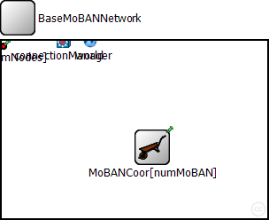
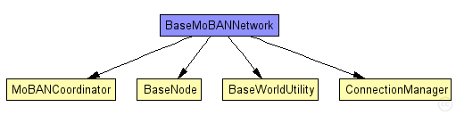
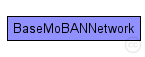

This documentation is released under the Creative Commons license
This documentation is released under the Creative Commons licenseThis network is exactly the same as baseNetwork existing among the examples of MiXiM, but the desired number of MoBAN coordinator modules have been added. Some nodes of type BaseNode use MoBANLocal module as their mobility module. Then those nodes will be considered as WBAN nodes. Those node have a parameter named "coordinatorIndex" that determines to which WBAN (coordinator) the node belongs.
The following diagram shows usage relationships between types. Unresolved types are missing from the diagram. Click here to see the full picture.
The following diagram shows inheritance relationships for this type. Unresolved types are missing from the diagram. Click here to see the full picture.
| Name | Type | Default value | Description |
|---|---|---|---|
| playgroundSizeX | double |
x size of the area the nodes are in (in meters) |
|
| playgroundSizeY | double |
y size of the area the nodes are in (in meters) |
|
| playgroundSizeZ | double |
z size of the area the nodes are in (in meters) |
|
| numNodes | double |
total number of nodes in the network, either ordinary nodes or WBAN nodes |
|
| numMoBAN | int |
total number of MoBAN coordinators (WBAN instances) |
| Name | Value | Description |
|---|---|---|
| isNetwork | ||
| display | bgb=$playgroundSizeX,$playgroundSizeY,white;bgp=0,0 |
| Name | Type | Default value | Description |
|---|---|---|---|
| connectionManager.coreDebug | bool |
debug switch for core framework |
|
| connectionManager.sendDirect | bool |
send directly to the node or create separate gates for every connection |
|
| connectionManager.pMax | double |
maximum sending power used for this network [mW] |
|
| connectionManager.sat | double |
minimum signal attenuation threshold [dBm] |
|
| connectionManager.alpha | double |
minimum path loss coefficient |
|
| connectionManager.carrierFrequency | double |
minimum carrier frequency of the channel [Hz] |
|
| world.coreDebug | bool |
debug switch for the base framework |
|
| world.useTorus | bool |
use the playground as torus? |
|
| world.use2D | bool |
use a 2-dimensional world? |
|
| node.utility.coreDebug | bool |
debug switch for the base framework |
|
| node.arp.coreDebug | bool |
debug switch for the core framework |
|
| node.mobility.coreDebug | bool |
debug switch for the core framework |
|
| node.mobility.x | double |
x coordinate of the nodes' position (-1 = random) |
|
| node.mobility.y | double |
y coordinate of the nodes' position (-1 = random) |
|
| node.mobility.z | double |
z coordinate of the nodes' position (-1 = random) |
|
| node.appl.debug | bool |
debug switch |
|
| node.appl.headerLength | int |
length of the application message header (in bits) |
|
| node.net.debug | bool |
debug switch |
|
| node.net.stats | bool |
stats switch |
|
| node.net.headerLength | double |
length of the network packet header (in bits) |
|
| node.nic.mac.notAffectedByHostState | bool | false | |
| node.nic.mac.coreDebug | bool |
debug switch |
|
| node.nic.mac.headerLength | double |
length of the MAC packet header (in bits) |
|
| node.nic.mac.slotDuration | double |
how long is a slot? [s] |
|
| node.nic.mac.difs | double |
maximum time between a packet and its ack [s] |
|
| node.nic.mac.maxTxAttempts | double |
maximum number of transmission attempts |
|
| node.nic.mac.queueLength | int |
length of the MAC queue |
|
| node.nic.mac.defaultChannel | double |
default channel |
|
| node.nic.mac.bitrate | double |
bit rate [bps] |
|
| node.nic.mac.txPower | double |
tx power [mW] |
|
| node.nic.mac.contentionWindow | double |
contention window |
|
| node.nic.phy.coreDebug | bool | ||
| node.nic.phy.recordStats | bool | false |
enable/disable tracking of statistics (eg. cOutvectors) |
| node.nic.phy.headerLength | int | 0 |
defines the length of the phy header (/preamble) |
| node.nic.phy.usePropagationDelay | bool |
Should transmission delay be simulated? |
|
| node.nic.phy.thermalNoise | double |
the strength of the thermal noise [dBm] |
|
| node.nic.phy.useThermalNoise | bool |
should thermal noise be considered? |
|
| node.nic.phy.analogueModels | xml |
Specification of the analogue models to use and their parameters |
|
| node.nic.phy.decider | xml |
Specification of the decider to use and its parameters |
|
| node.nic.phy.sensitivity | double |
The sensitivity of the physical layer [dBm] |
|
| node.nic.phy.maxTXPower | double |
The maximum transimission power of the physical layer [mW] |
|
| node.nic.phy.timeRXToTX | double | 0 |
switchTimes [s]: |
| node.nic.phy.timeRXToSleep | double | 0 | |
| node.nic.phy.timeTXToRX | double | 0 | |
| node.nic.phy.timeTXToSleep | double | 0 | |
| node.nic.phy.timeSleepToRX | double | 0 | |
| node.nic.phy.timeSleepToTX | double | 0 | |
| node.nic.phy.initialRadioState | int | 0 |
state the radio is initially in |
| node.nic.phy.radioMinAtt | double | 1.0 |
radios gain factor (attenuation) while receiving |
| node.nic.phy.radioMaxAtt | double | 0.0 |
radios gain factor (attenuation) while not receiving |
| MoBANCoor.debug | bool |
debug switch |
|
| MoBANCoor.updateInterval | double |
Time interval to update the nodes position (seconds). |
|
| MoBANCoor.numNodes | int |
Number of sendor nodes belong to this WBAN |
|
| MoBANCoor.postureSpecFile | xml |
The input file that includes the specification of all postures |
|
| MoBANCoor.configFile | xml |
The configuration file for setting probability vectors, distributions and correlations |
|
| MoBANCoor.useMobilityPattern | bool |
Set if the logged mobility pattern is used. |
|
| MoBANCoor.mobilityPatternFile | string |
The input file for mobility pattern if it is going to be used. |
// // This network is exactly the same as baseNetwork existing among the examples of MiXiM, but the desired number of MoBAN coordinator modules have been added. // Some nodes of type BaseNode use MoBANLocal module as their mobility module. Then those nodes will be considered as WBAN nodes. // Those node have a parameter named "coordinatorIndex" that determines to which WBAN (coordinator) the node belongs. // network BaseMoBANNetwork { parameters: double playgroundSizeX @unit(m); // x size of the area the nodes are in (in meters) double playgroundSizeY @unit(m); // y size of the area the nodes are in (in meters) double playgroundSizeZ @unit(m); // z size of the area the nodes are in (in meters) double numNodes; // total number of nodes in the network, either ordinary nodes or WBAN nodes int numMoBAN; // total number of MoBAN coordinators (WBAN instances) @display("bgb=$playgroundSizeX,$playgroundSizeY,white;bgp=0,0"); submodules: connectionManager: ConnectionManager { parameters: @display("p=70,0;i=abstract/multicast;;is=vs"); } world: BaseWorldUtility { parameters: playgroundSizeX = playgroundSizeX; playgroundSizeY = playgroundSizeY; playgroundSizeZ = playgroundSizeZ; @display("p=100,0;i=misc/globe;is=vs"); } node[numNodes]: BaseNode { parameters: @display("p=2,6;b=8,8,oval,red,,"); } MoBANCoor[numMoBAN]: MoBANCoordinator { parameters: @display("p=170,120;i=block/wheelbarrow"); } connections allowunconnected: }
This documentation is released under the Creative Commons license